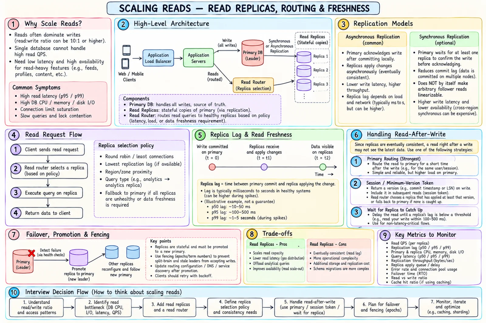

Topic · Scaling Reads
Read Replicas: Routing and Freshness
Replicas multiply read capacity, not write capacity. The hard parts are lag, read-after-write, replica selection, and safe failover.


Quick Revision
- Writes + correctness-sensitive reads → primary; stale-tolerant reads → replicas.
- Async = fast writes, stale reads. Sync = less data-loss risk, slower writes.
- Sync replication alone does not make follower reads linearizable.
- Read-after-write: primary stickiness or minimum-version token.
- Failover needs detection, promotion, fencing, rerouting.
Replication modes
writes + correctness-sensitive reads → primary ordinary stale-tolerant reads → replicas
- Asynchronous - primary acks after local commit; replicas apply later. Low write latency, high read throughput, stale reads.
- Synchronous - primary waits for replica(s). Lower acknowledged-data-loss risk; higher write latency, less availability. Read routing still decides freshness.
Replica selection
- Round robin or least connections.
- Lowest observed lag.
- Same-region / same-zone affinity.
- Dedicated replicas for analytics/reporting.
- Fall back to primary only when needed - an unbounded fallback turns a replica incident into a full outage.
Read-after-write
| Strategy | Mechanism | Trade-off |
|---|---|---|
| Primary stickiness | Route the user to primary briefly after a write | Simple; more primary load |
| Minimum-version token | Write returns LSN; replica serves only once caught up | Precise; version-aware routing |
| Wait for replica | Block until lag is under threshold | Latency, timeouts |
| Quorum / versioned read | Compare copies or require a version | More network work |
| Bounded staleness | Explicit lag budget | Best throughput; not for invariants |
Failover
- Detect failure via health checks.
- Elect or promote a replica (consensus or operator).
- Fence with epoch/term so the old leader can't write.
- Update routing / DNS / service discovery.
- Repoint remaining replicas.
- Validate RPO and RTO.
Trade-offs
| Choice | Benefit | Cost |
|---|---|---|
| Read replicas | Scale stale-tolerant reads, isolate analytics | Lag, routing, storage, failover |
| Async replication | Low write latency, availability | Stale reads, RPO on failover |
| Sync replication | Less acknowledged-data loss | Write latency, partition availability |
| Read from primary | Freshest | Primary capacity |
| Min-version token | Precise RAW with replicas | Client/router complexity |
| Replicas before sharding | Less app complexity | Doesn't fix write/storage ceiling |
Failure modes
- Stale read after write - stickiness, min-version token, or wait.
- Replica outage overloads primary - healthy-replica routing, primary QPS cap, shedding.
- Stale leader accepts writes - epoch/term fencing, consensus/lease discipline.
- Averages hide lag - per-replica lag metrics; drop outliers from routing.
Interview practice
Answer aloud, then reveal.
How do read replicas affect consistency?
Async replicas lag. Route writes and fresh reads to primary, or use a min-version token/stickiness. Sync commit alone doesn't make follower reads linearizable.
Make an update immediately visible?
Commit first, invalidate/update versioned caches, route the next read to primary or a replica at the returned version. TTL alone isn't enough.
Stop a replica outage from overloading the primary?
Remove the bad replica, rebalance, cap primary fallback, shed non-critical reads, replace replicas.
Combine replicas and cache?
Yes - cache removes repeats; replicas add origin capacity and availability. Decide if misses may read replicas and how lag affects correctness.